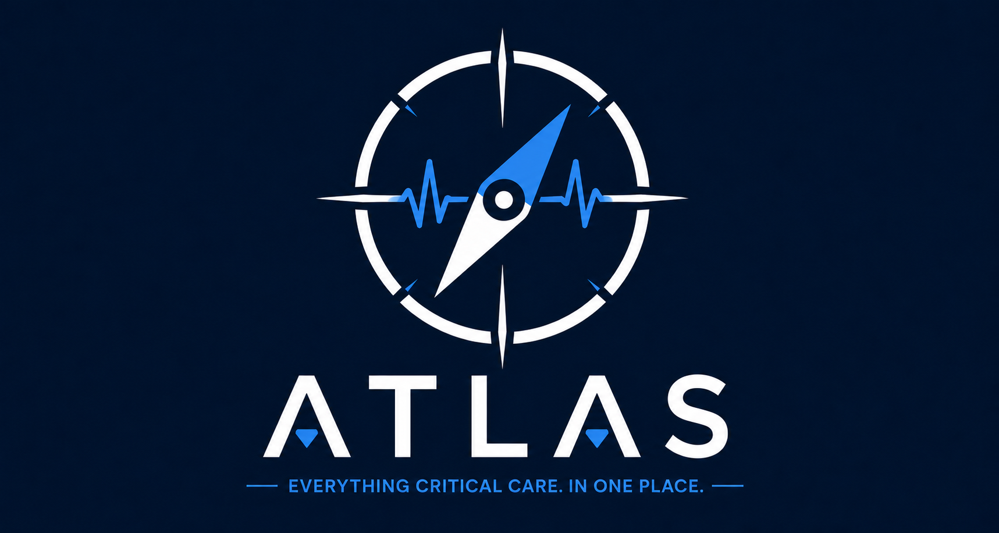
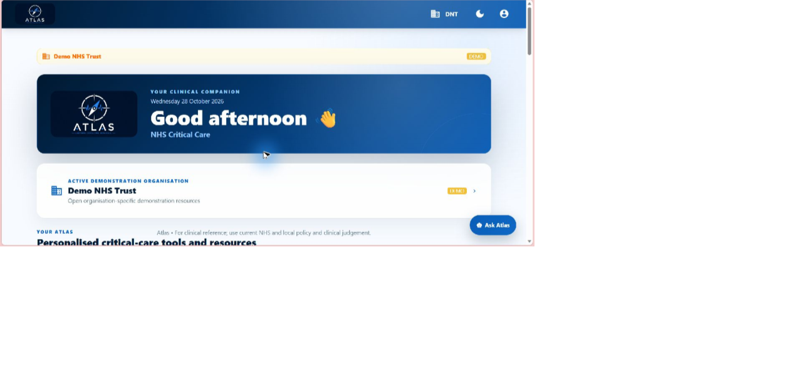

Knowledge is dispersed
Local and national resources can sit across disconnected folders, platforms and links.

View prototypeCritical-care software prototype
Atlas brings clinical resources, rapid-access support and professional development into one coherent critical-care workspace.

Genuine screenshot · fictional demonstration content
The challenge
At the point of care, clinicians may need to navigate local guidance, education, contacts, portfolio evidence and practical support across separate systems. The burden is not simply finding information — it is finding the right information, in the right context, at the right time.
Local and national resources can sit across disconnected folders, platforms and links.
Role, career stage and active organisation all shape what is relevant to an individual clinician.
Learning records, teaching opportunities and reflective evidence are often detached from daily work.
One connected workspace
A portable clinician profile sits alongside a clearly identified organisation-specific workspace, allowing personal learning records to remain with the individual while local demonstration content changes with context.
Clinical access
Trust-aware demonstration resources, rapid-access 3AM Mode, procedures, equipment support and source-conscious Ask Atlas journeys.
Personal development
Portfolio, ultrasound and procedure records, learning plans, rota tools and wellbeing support are organised around the individual.
Role-aware education
Demonstration pathways adapt recommendations by profession and career stage while preserving wider MDT access.
Connected teams
A Trust-specific teaching calendar and simulated MDT community show how education could connect with the wider workspace.
Designed with boundaries
“A useful clinical product must make its context, source and limitations unmistakable.”
Atlas displays prominent prototype warnings and does not replace clinical judgement or current policy.
The working prototype
Every image below is a genuine screenshot from the current Atlas prototype using fictional demonstration content.
A calm, focused route into urgent-reference categories, with organisation context and prototype warnings kept visible.
A visual, predetermined demonstration of how a governed, cited and organisation-aware assistant could work. It is not connected to live AI.
Structured learning and evidence areas designed to remain with the clinician when their active organisation changes.
Fictional Trust-specific events with weekly and monthly views, filters, saved events and simulated calendar actions.
Predetermined fictional channels demonstrate role- and Trust-aware communication, moderation and notification controls. Live messaging is not enabled.
Clinician-led innovation
Atlas was conceived and built independently by an experienced Advanced Critical Care Practitioner.
Its product decisions come from practical experience: how information is searched for under pressure, how clinicians develop across roles and career stages, and how local context needs to remain visible without fragmenting the wider experience.
Current stage & ambition
A working, responsive application with demonstration workflows, persistent personal data and organisation-aware content.
Structured feedback with critical-care professionals to test usefulness, usability and priority needs.
Clinical-safety, information-governance, data-protection, technical and regulatory work before any real-world deployment.
Atlas is a functional prototype currently undergoing development and evaluation. It is not NHS-endorsed, clinically deployed or approved as a medical device. Demonstration content is fictional and must not be used for clinical care.